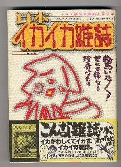
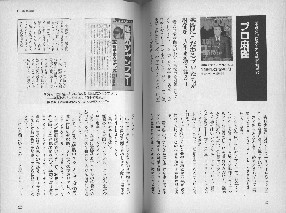

いくらなんでもおかしなタイトルの雑誌だと思った。（^-^）

表紙には、「こんな雑誌があったのか」とか、「イカがわしくて」、「イカした」などの惹句がある。（ああ、そうか。むかしの深夜番組、「イカしたバンド天国」、略してイカ天なんてのがあったが、あのノリか）と納得がいった。
読んでみると「養豚界」という業界誌やら、元気な百姓の機関誌、「百姓天国」など、珍らしい雑誌がいっぱい紹介されている。（へえ〜、面白いなぁ）と思いながら読んでいると、なんと、「月刊プロ麻雀」も取り上げられている。
う〜む、プロ麻雀が養豚雑誌と同レベルで紹介されているとは思わなかった、なんて思いながら奥付きを見ると、なんと発行は1996年４月15日、竹書房(4-8124-0109-7)。

見開きで、田中健次郎氏の連載コラムも紹介されている。惹句に「読者が、“次回の掲載はあるのか”と心配している」とある。ホント、σ(-_-)もおんなじ思い。しかし、この雑誌が出た時点でそう云われているわけだが、それからすでに６年経つ。すごいバイタリティだと感心するばかり。
いずれにしても面白いのでさっそく買ったが、さすがに近代麻雀は載っていなかった。（^-^）
|